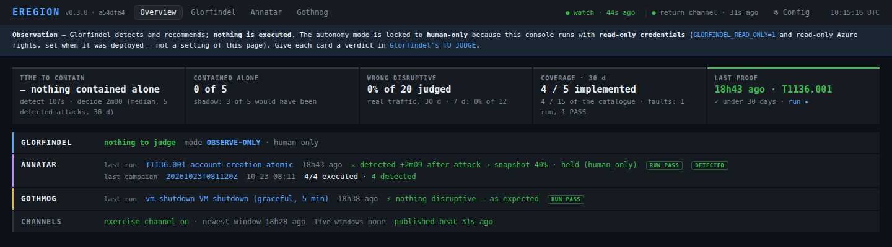
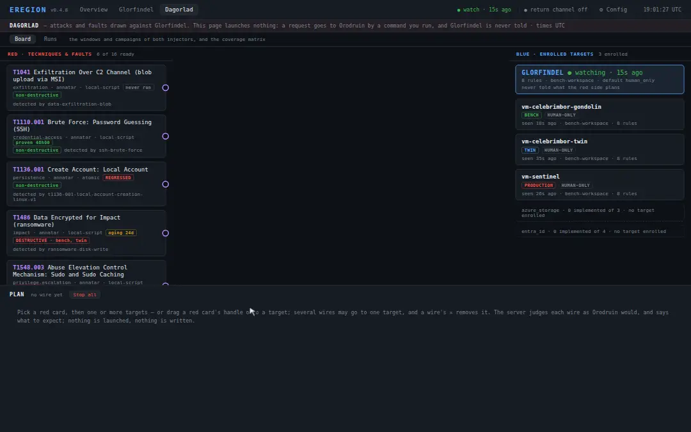
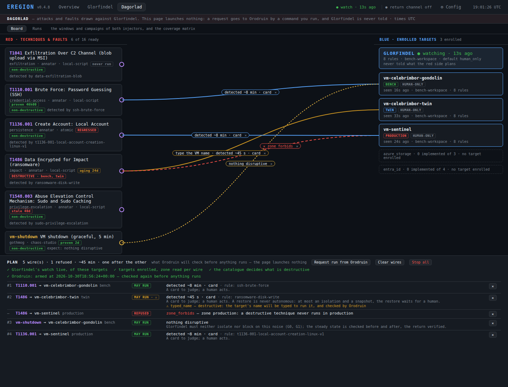
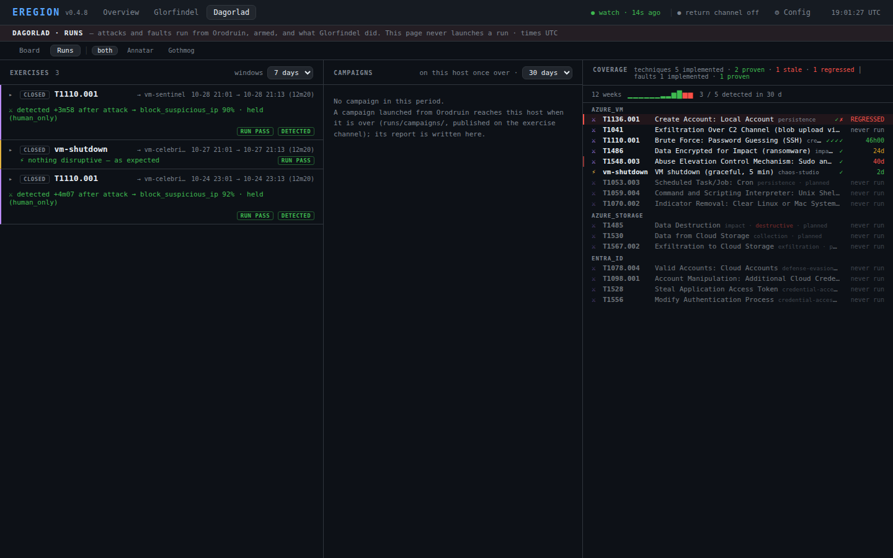

EREGION
Cloud detection & response, for teams without a SOC — and the proof it works: measured in shadow on your production, with attacks and failures replayed on a disposable copy.
- Glorfindel (blue), the product: it detects on your cloud logs, responds with the minimum effective action, verifies it on the cloud API and learns from every incident.
- Annatar (red) launches real MITRE ATT&CK techniques from public libraries (Atomic Red Team) to prove the defense works.
- Gothmog (faults) runs declared failures with a public chaos engine (Azure Chaos Studio): noise Glorfindel must not act on, a recovery timed.
Production rule — never a fault or a destructive action on a real workload.
Every enrolled target carries its zone (bench, twin or production),
and every injector goes through one guard: anything unknown is refused.
The console
Observe-only by default: Glorfindel recommends, you decide, and you grant it autonomy per asset as you build trust. The overview gives the five indicators the project is judged by, over 30 days.

Dagorlad, the exercise board
The red side on the left — Annatar's techniques, Gothmog's faults —, the blue side on the right — Glorfindel and the enrolled targets. Draw a wire from a red card to a target: the server judges it as Orodruin, the host of the injectors, will judge it (zone, enrollment, production rule, a live watch), and says what to expect, or why it is refused. A request is written for Orodruin and carried there by a command you run, where the name of each destructive target is typed. The console launches nothing, and Glorfindel is never told.


zone_forbids), one that will ask for the
VM's name.
The images come from fictitious sample data, never a real bench. How to use the board (French): docs/dagorlad.md.